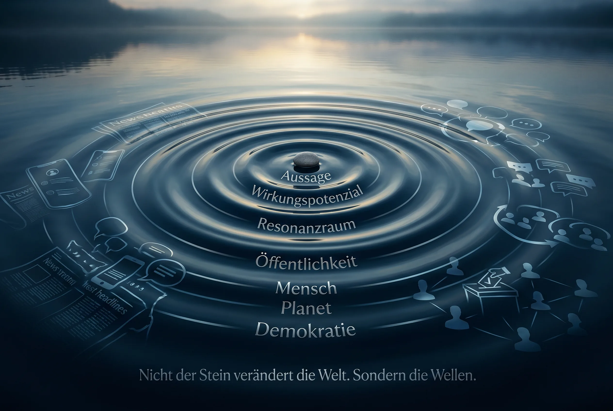

Fünf Wellen
Wie öffentliche Wirkung entsteht.
Ein Satz wird sichtbar, aktiviert Gefühle, bietet eine Deutung an, findet Resonanz und kann Debatten, Vertrauen oder Entscheidungen verschieben.
 Wirkungsökonomie
Wirkungsökonomie
Die fünf Wellen öffentlicher Wirkung
Antworten finden. Narrative einordnen. Debatten wirksamer führen. Öffentliche Aussagen wirken nicht nur über Fakten. Sie treffen auf Erfahrungen, Ängste, Loyalitäten, Plattformlogiken und politische Interessen. Der Öffentliche Wirkungsraum hilft, konkrete Aussagen schnell einzuordnen, passende Antworten zu finden und die tieferen Wirkpfade sichtbar zu machen.
Audio-Einführung verfügbar.
Ebene 1 · Verstehen
Wer eine Aussage beantworten will, muss zuerst sehen, worauf er antwortet: auf Fakten, auf ein Gefühl, auf einen Frame, auf Resonanz - oder auf eine tiefere Systemfrage.
Fünf Wellen
Ein Satz wird sichtbar, aktiviert Gefühle, bietet eine Deutung an, findet Resonanz und kann Debatten, Vertrauen oder Entscheidungen verschieben.
Tiefe
Unter der Oberfläche liegen Erfahrungen, Anreize, Institutionen, Plattformlogiken, Machtverhältnisse und ungelöste Systemfragen.
Leitidee
Eine demokratische Öffentlichkeit muss Aussagen prüfen, Resonanz einordnen, Aufmerksamkeit gewichten und Ursachen sichtbar machen. Erst dann wird aus Debatte mehr als Reaktion. Erst dann entsteht Orientierung.
Der Öffentliche Wirkungsraum fragt deshalb nicht nur: Stimmt eine Aussage? Sondern auch: Warum bekommt sie Anschluss? Welche Aufmerksamkeit bindet sie? Welche Fragen verdrängt sie? Welche Wirkpfade öffnet sie? Und was braucht eine Öffentlichkeit, um prüffähig, lernfähig und handlungsfähig zu bleiben?

Modell in 30 Sekunden
Das Modell ordnet öffentliche Dynamik, ohne Debatten zu bewerten oder Menschen zu etikettieren.
Faktenlage
Quellen, Datenstand, Unsicherheit und Grenzen werden sichtbar gemacht.
Framing
Ein Satz legt oft schon fest, wer schuld ist, was als Problem gilt und welche Lösung naheliegt.
Resonanz
Wirkungspotenzial entsteht über Erfahrungen, Zugehörigkeit, Angst, Vertrauen, Kränkung, Status und Wiederholung.
Agenda
Aufmerksamkeit ist begrenzt. Jedes laute Thema kann wichtige Wirkungsfragen verdrängen.
Ursache
Viele Aufreger sind Symptome. Der Ursachen-Navigator fragt nach dem Hebel darunter.
Resilienz
Demokratische Resilienz entsteht, wenn Öffentlichkeit prüfen, unterscheiden, korrigieren und handeln kann.
Tiefe
Unter der sichtbaren Aussage liegen oft Erfahrungen, Anreize, Infrastruktur, Verfahren, Plattformlogiken und Machtverhältnisse. Die Tiefe fragt nach dem Hebel, der den Zustand wirklich verändert.
Tiefe
Was würde dieses Produkt kosten, wenn seine Wirkung mit im Preis wäre?
Tiefe
Wer zahlt am Ende die Rechnung, wenn sie nicht im Preis steht?
Tiefe
Welche Bürokratie brauchen wir nur deshalb, weil Preise und Anreize vorher falsch sind?
Tiefe
Was ändert sich an der Entscheidung, wenn wir die Wirkung kennen?
Tiefe
Ist dieses Thema wichtig - oder nur wirksam laut?
Tiefe
Welche Inhalte belohnt der öffentliche Raum - und welche Gesellschaft entsteht dadurch?
Ebene 2 · Anwenden
Suche nach Aussage, Thema, Narrativ oder Werkzeug. Die Werkzeuge kommen nach der Grundlogik - aber sie bleiben schnell erreichbar.
Inhalte gefunden
Ich habe eine konkrete Aussage gehört.
Wenn ein Satz schon im Raum steht: Was wird behauptet? Welcher Frame steckt dahinter? Wie antworte ich, ohne in die Falle zu laufen?
Ich suche eine Debattenkarte.
Alle Karten nach Aussage, Thema, Narrativ und Antwortbedarf durchsuchen.
Ich sehe ein wiederkehrendes Narrativ.
Welche Geschichte wird erzählt, was soll sie auslösen und wie kann ich den Frame ruhig drehen?
Ich brauche ein Antwortformat.
Kurze Antworten für Gespräch, Kommentarspalte, Panel, Interview oder Host-Situation.
Ein Thema dominiert gerade alles.
Wenn alle über dasselbe reden: Passt die öffentliche Aufmerksamkeit zum tatsächlichen Wirkungsgewicht des Themas?
Ich frage mich, was übersehen wird.
Welche Wirkungsfragen sind wichtig, aber leise? Welche Probleme haben hohes Wirkungsgewicht, aber zu wenig öffentliche Aufmerksamkeit?
Ich will zur Ursache.
Vom Aufreger zur Systemfrage: Welche Ursache liegt unter der Oberfläche? Welche Hebel würden wirklich etwas verändern?
Ich will Debatten widerstandsfähiger machen.
Wie bleibt Öffentlichkeit prüffähig, lernfähig und handlungsfähig, auch wenn Empörung, Angst und Manipulation zunehmen?
Aktuell im Diskurs
Diese Einstiege zeigen nicht nur Werkzeuge, sondern konkrete öffentliche Gewichtungen: Was wird laut, was bleibt leise, welche Ursache liegt darunter?
Klima & Energie
Wenn nur die Kosten der Lösung sichtbar sind, wirkt der Schaden kostenlos.
Klima & Energie
Eine richtige Teilzahl wird zur falschen Entlastung.
Demokratie & Öffentlichkeit
Eine Regel wird zum Symbol für Kontrollverlust.
Migration
Ankommen kostet. Nicht-Ankommen kostet mehr.
Vom Satz zur Systemfrage
Szene
In einer Talkshow sagt jemand: „Die da oben hören uns nicht mehr zu.“ Der Satz ist kurz. Aber er arbeitet weiter: in Überschriften, Kommentarspalten, Gruppen, Clips und Gesprächen. Manche fühlen sich verstanden, andere angegriffen. Oft fragt niemand mehr, welches konkrete Problem eigentlich gelöst werden müsste.
Wirkungsanalyse
Genau hier beginnt Wirkungsanalyse: nicht erst bei der Frage, ob jedes Wort formal richtig ist, sondern bei der Frage, welcher Resonanzraum entsteht: Vertrauen oder Misstrauen? Klärung oder Feindbild? Ursache oder Ablenkung? Handlungsfähigkeit oder Ohnmacht?
Methodische Leitplanken
Der Öffentliche Wirkungsraum ist kein Wahrheitsministerium, kein Zensurwerkzeug und keine Instanz, die Menschen bewertet. Er ersetzt keinen Faktencheck und keine politische Debatte. Er ergänzt sie.
Ein Faktencheck prüft, ob eine Aussage stimmt. Eine Wirkungsanalyse fragt, welche Resonanzräume, Wirkungspotenziale, Wirkpfade und Rückkopplungen eine Aussage öffnet. Sie unterstellt keine Absicht. Sie macht sichtbar, wie Sprache, Aufmerksamkeit und Wiederholung öffentliche Wirklichkeit mitformen können.
Ebene 3 · Vertiefen
Wer tiefer einsteigen will, findet hier die Langfassungen, Begriffe, Lernwege und methodischen Grundlagen.
Dossier
Langfassung zum Modell: Aussage, Resonanz, Aufmerksamkeit, Ursache, Wellen und demokratische Resilienz.
Die PDF-Fassung als Arbeits- und Vertiefungsdokument.
Journal
Journalartikel, Einordnungen und neue Texte zum Debatten- und Resonanzraum.
Glossar
Wirkung, Wirkungspotenzial, Resonanzraum, Wirkpfad, Wirkungsrisiko und weitere Begriffe nachschlagen.
Akademie
Vertiefen, Fragen stellen und Narrative redaktionell einreichen.
Forschung
Methodik, Schutzlinien, Quellenlogik und offene Forschungsfragen einordnen.
Kurzform
Debatten-Kompass = Antwortqualität. Resonanz-Kompass = Aufmerksamkeitsqualität. Agenda-Radar = Prioritätsqualität. Ursachen-Navigator = Ursachenqualität. Resilienz-Prinzipien = demokratische Schutzlogik. Gemeinsame Wirkung: eine Öffentlichkeit, die nicht jedem Stöckchen hinterherläuft, sondern bessere Wirkungsfragen stellt.